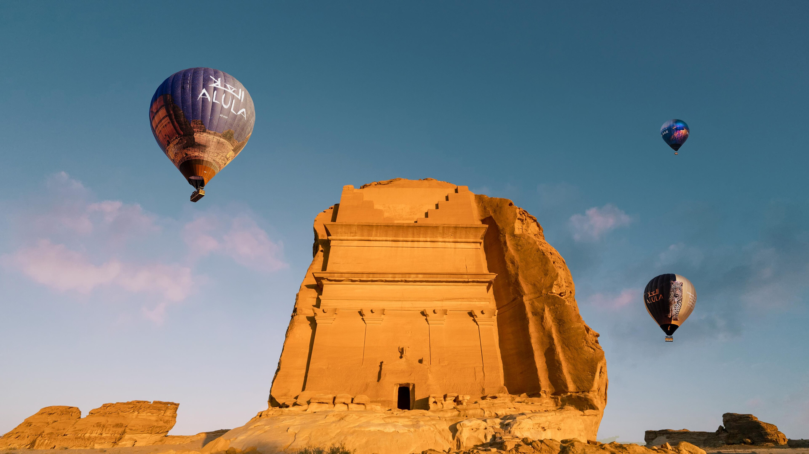
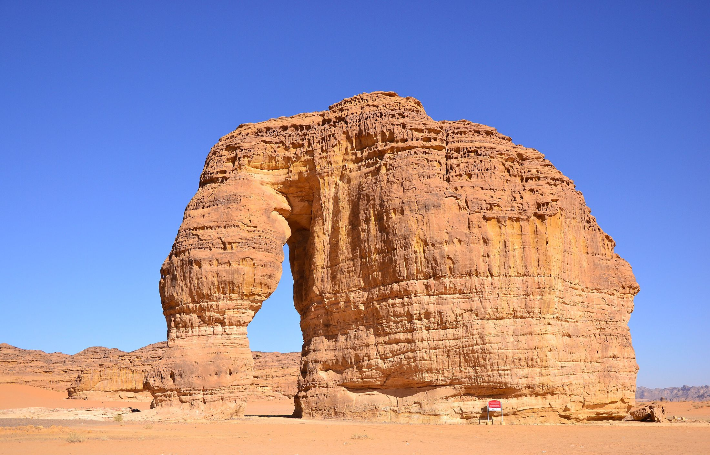

محافظة العُلا، شمال غرب المملكة
العُلا
وادٍ من الحجر الرملي يحفظ مقابر الأنباط المنحوتة، وبلدةً من الطين عمرها قرون، وسماءً تتبدّل ألوانها مع كل ساعة.
متحف مفتوح بحجم وادٍ كامل
العُلا ليست معلمًا واحدًا تزوره ثم تمضي، بل وادٍ طويل في شمال غرب المملكة عبرته قوافل البخور قبل أكثر من ألفي عام، واستوطنته مملكتا دادان ولحيان ثم الأنباط، فبقيت آثارهم منحوتة في الصخر حتى اليوم.
جمعنا لك في هذا الدليل أبرز المعالم، ومخططًا تبني فيه رحلتك يومًا بيوم، ونصائح تحتاجها قبل أن تنطلق.
- 110+مقبرة نبطية منحوتة في الحِجر
- 52مترًا ارتفاع جبل الفيل
- 9,740مترًا مربعًا من المرايا تكسو مبنى مرايا
- 900بيت طيني تقريبًا في البلدة القديمة
من دادان إلى مرايا
خمس محطات تختصر حكاية الوادي.
-
الألفية الأولى ق.م
دادان ولحيان
تقوم في الوادي مملكتا دادان ولحيان، وتترك نقوشها على صخور جبل عكمة.
-
القرن الأول ق.م إلى الأول م
الأنباط في الحِجر
ينحت الأنباط مقابرهم الضخمة في الحجر الرملي ويزيّنون واجهاتها.
-
القرن الثاني عشر
البلدة القديمة
تنشأ بلدة الطين على طريق الحج بين دمشق ومكة، ويسكنها الناس حتى الثمانينات.
-
2008
أول موقع سعودي في اليونسكو
تُدرج الحِجر في قائمة التراث العالمي، لتكون أول موقع في المملكة يدخل القائمة.
-
2019
مرايا
يكتمل بناء قاعة مرايا، ثم تدخل موسوعة غينيس بوصفها أكبر مبنى مكسو بالمرايا في العالم.


شاهد العُلا واسمعها
فيلم مهندسو الجزيرة العربية القديمة من إنتاج Discovery، يروي قصة الأنباط الذين نحتوا مدنهم في صخور العُلا.
صوت ريح هادئة يرافقك وأنت تتصفّح الدليل.

رتّب رحلتك يومًا بيوم
اسحب الأماكن إلى أيام رحلتك، ونحسب لك الوقت والتكلفة التقريبية، ثم احفظ خطتك أو نزّلها صورة.
افتح المخطط